2. Computer-aided design
Design and make 3D mold and produce fiber composites
My first 3D CAD design trial begins
As an Industrial Engineering Student I’m used to calculating numbers and finding flaws between two objects in factory process. This week I asked my FabLab Instructor and colleague what is the best starting tool for starting step. To me 3D modeling is a whole new concept that I’ve never tried it before. Therefore, I needed intuitive and less complicated program to start all- over
Let’s check the outer dimension !!
It’s always easy to use the real dimension and Ultimaker2 was as far as I’m concerned is the best size to perform my proposed idea.
‘123D Design’ by Autodesk was very familiar with me as I’ve tried ‘123D catch’ before and I heard It is open-source program
At first, I needed to understand the concept called ‘split’. To me 3D modeling was drawling lines and boxes(with shapes) in open workspace. To be honest it took me 2 hours to actually put ceratin surface that i want on smaller surfaces.
My first success of making hole at wanted surface !
Now I’m trying to make the basement of my project what i call now as ‘Move your marble’ Outer layer of the project is very similar to 3D printer model ‘Almond’ or ‘Ultimaker’ from my Fab Lab Seoul. I want to modify the outer design so it looks like an entertainment play console.
Before i started the class, I wasn't sure if my notebook could stand 3D modeling softwares. As a matter of fact, I couldn't save my design to my computer two times in a row. Therefore, I uploaded my project online and downloaded again for safety. Lesson I've learned so far (Always try to learn saving my work first!!)
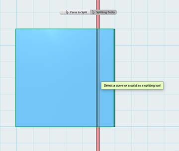 |
|
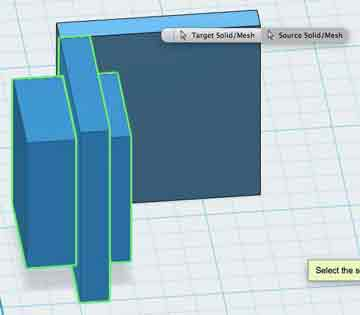 |
Drawing (one) surface to cut |
Split face |
Making extrude to make a hole |
I tried to split the normal box and it seem's like drawing a polyline on base surface is the best way to draw blades that cut the objects.
Side frames must be freely accessible for users to setup obstacles. This is my attempt at first, to make another box to intersect into existing one. Then, I subtracted the crossed part so i can make rectangular open space.
Using angles, sketch and extruding 'NEW SOLID' :)
I'm kind of getting the concept of extruding the surface of the sketches.
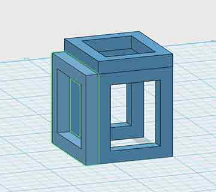 |
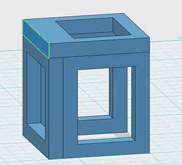 |
Misunderstanding the 3D design of making 3D model |
Temporary fix of making 3D Box |
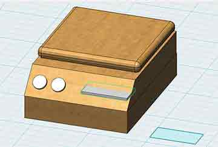 |
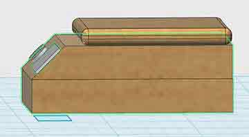 |
Before adding display panel |
Looking it from side-view |
Designing one-by-one
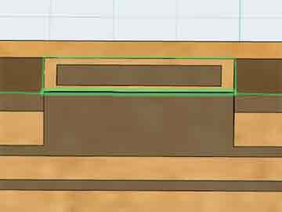 |
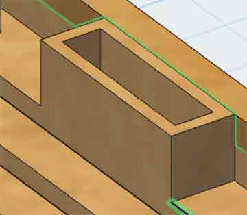 |
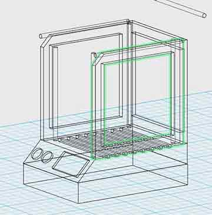 |
Adding a goal line at the end |
Sideview of goalline |
Wireframe on 123D Design |
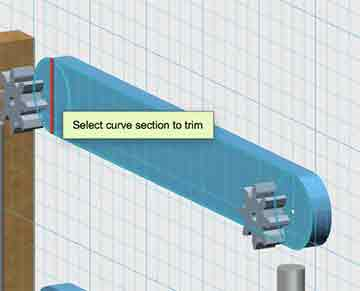 |
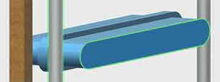 |
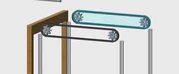 |
Making timing belt |
Extrusion of holing(subtracting) part |
Making it look alike timing belt |
This is my first prototype of my proposed final-project. It looks like an entertainment unit with steel rod that holds the main device in the middle to be moving in xyz axes. As 123D Design doesn't support a feature like 'constrain' I could not see how the components effect each other in tolerance of steel rod when actually joined together. I draw 2 circles and 1 rectangle to make belt-shaped sketch. In this way, I thought I could scale down the original sketch to intersect and subtract it.
This is what i would've done when I couldn't figure out how to offset the sketches.
Rhino? Inventor?
At this point I had some serious thoughts whether i should move on to more complexed programs. However, I thought to myself and talked to the Fab Instructor that I fully understand all the tools and master single software step-by-step.
I started Fab Academy knowing absolutely nothing about 3D designs and I finally come to a level, where I can draw something on the surface. I think it's better for me to take steady pace.
I tried laying the gear in parallel lines to fit into the right place where the gear should be. and always checked if two sets of parts are moving in same distance. "Mirroring" in selective direction was my tool to easily copy the selective parts.
Google Sketchup
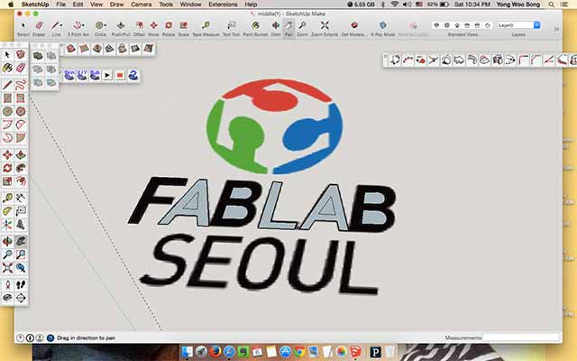 |
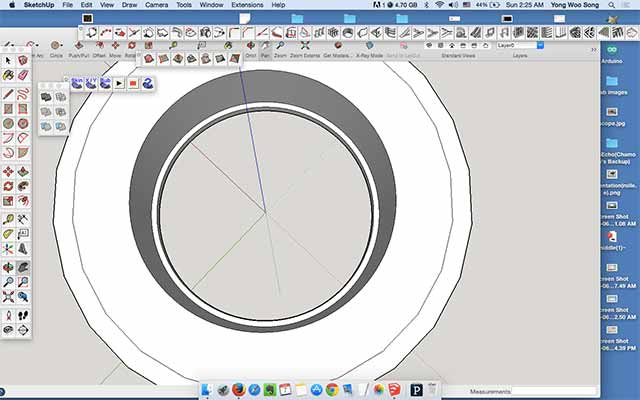 |
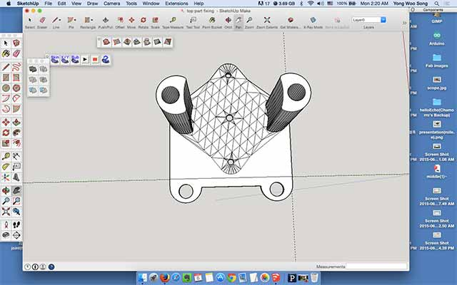 |
Drawing simple line on PNG image |
Making bearing out of 'Offset' feature |
Using 'Arc' feature for and extrusion |
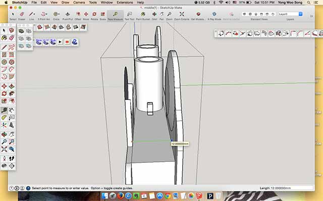 |
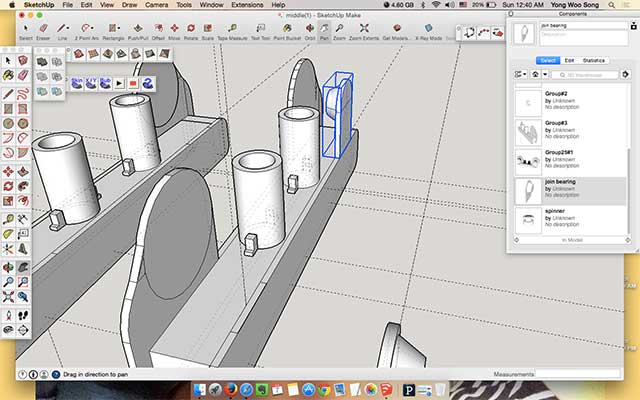 |
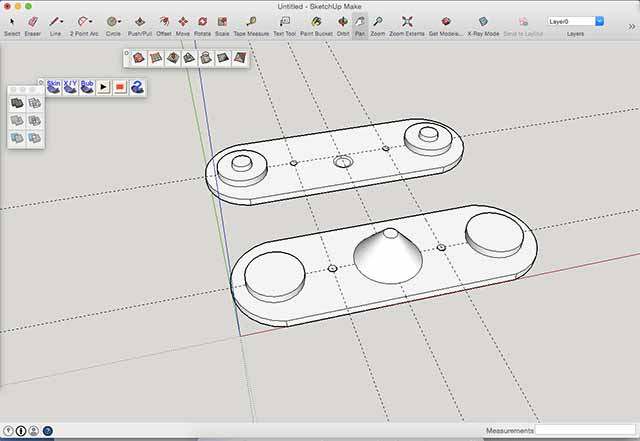 |
Making 'component' |
Using as component |
Using grid lines for accurate modeling |
Whole new features could be learnt from Google Sketchup like shown above. When using the components be sure to double-click it and edit, otherwise gridlines and making adjustment ins position or shape can cause serious problems. From understanding 3D extrusion and what I need to do with drawing sketches and then use the sketch to build model in 3D.By configuring lots of outer lines I've made curvy shapes that are necessary for my design.
I tRIED ...
123D Design : Starting point of learning 3D modeling
Inventor Professional 2014 : When learning the concept of constrain
Google Sketchup : Modeling the parts for final project + adding plugins for better modeling the file
(Sketchup Plugins - Solid Inspector/ to check the errors, Export STL/ to make .stl files.
Inventor fusion for mac : emergency backup for making accurate bearings for final project 'Selfie-Your Plant-Watie'
Summary : I Learned ...
It was a good thing to start with easy program but, as the time goes by every action i want to move objects in workspace. I had to set exact dimensions to assemble. 'Snap' was also making me hard to move objects the way that i want and setting the x,y,z to move mm by mm was taking too much time. Another mistake that I did was that I didn't save the project as in parts. which means It takes more time load the file and make adjustments. It is now a good lesson that I've learned that keeping parts in seperate parts and later on assemble together
3D modeling which I thought to be the essential part for 3D modeling was why I came back to week2 for another documentation of final archive. I practiced a lot with 3D modeling and as far as I learned so far is not only you learn how to draw shapes in 3D modeling you can do a lot more jobs such as 3D rendering to look more alike and when you get used to with one program it's much more easier to learn other 3D design program. This what happened when I had to use other computer that's not my personal belongings and was a new approach.
---- To be continued -----
Sketchup was a great program for me todo my final project, until i found some issues. When exporting .stl files be sure to explode the curve othewise the infill or other parts will have errors when you are running the file on CURA or Makerbot. Normally Sketchup 'Solid Inspector' catches the inside curves or the component that is not joined together. Any special errors you should manually fix it by looking it more closely.